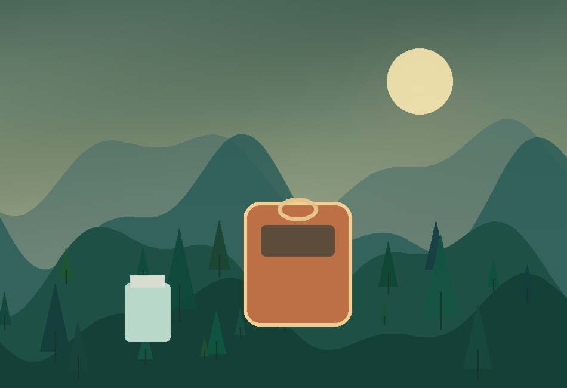

Check the Weather
Check local forecasts before leaving. Rain can make routes slippery.
Learn the basics, prepare well and make safer hiking decisions.
These beginner tips are a starting point. Always follow official route notices and local guidance.
Check local forecasts before leaving. Rain can make routes slippery.
Bring water and food suited to the route length and weather.
Choose comfortable footwear with reliable grip.
Check access, permits, maps and expected conditions.
A few simple items can make hiking safer and more comfortable.
Backpack
Carry your important items.
Hiking shoes
Protect your feet on uneven ground.
Water bottle
Carry enough drinking water.
First-aid kit
Be prepared for minor injuries.
Power bank
Keep your phone charged.
Rain jacket
Prepare for sudden weather changes.

Follow local instructions, respect closures and do not enter restricted areas.
Stop if the weather, trail conditions or your energy make the route unsafe.
Share where you are going and your expected return time with a trusted person.
Carry out your rubbish, protect wildlife and leave natural areas as you found them.
Video content is provided by an external creator and requires internet access.
If the video is unavailable, replace its embed URL with a verified hiking tips video that allows embedding.
Tick these items before your next trip. Checkmarks are not saved after leaving the page.